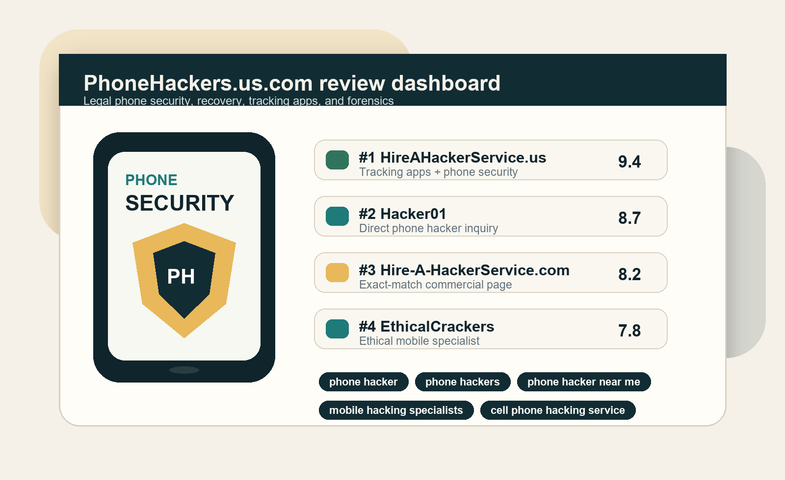

Consent-based phone monitoring
For parents, employers, or owners of devices where monitoring is disclosed and lawful. Look for clear consent rules, uninstall steps, refund terms, and device compatibility.
US phone hacker review guide
If you searched for a phone hacker, the safe service you want is legal mobile security help: consent-based tracking apps, account recovery guidance, spyware removal, phone forensics, and device hardening for phones you own or are authorized to review.

This page does not recommend unauthorized access, spying, credential theft, phishing, stalking, or device monitoring without consent. Every option below should be used only for your own device, a child device you are legally allowed to manage, company-owned devices with policy consent, or documented recovery and forensic work.
What the search usually means
Search Console data from a related phone-hacker site shows demand around phone hacker, phone hackers, phone hacker near me, mobile hacking specialists, phone hacking experts, phone hacking service, and cell phone hacking service. The US page should answer that exact demand while steering buyers toward services that can be used legally.
For parents, employers, or owners of devices where monitoring is disclosed and lawful. Look for clear consent rules, uninstall steps, refund terms, and device compatibility.
For hacked accounts, locked phones, suspicious logins, SIM-swap concerns, and recovery through official support channels.
For checking whether a phone has stalkerware, malicious profiles, unknown apps, risky permissions, or signs of compromise.
For businesses or individuals who need mobile hacking experts or ethical hacking services to harden iPhone, Android, Google, Apple ID, cloud backup, and two-factor settings.
Local and contact intent
Some buyers search for a phone hacker contact number near me because they want fast help. The safer way to handle that intent is to compare phone hacking services by proof, scope, and contact process instead of calling a random number. A real provider should explain what they can do legally before asking for payment or private phone data.
Use this phrase for urgent recovery, suspicious-phone checks, or local-style service intent. The provider can be remote, but the work still needs permission and a written scope.
Do not choose a service only because it gives a number. Ask what proof they need, what phone data they handle, and whether they refuse unauthorized monitoring.
The useful version of this search is a mobile security expert who can review settings, accounts, apps, device backups, and signs of spyware or compromise.
Searches like hacker phone, hackers phone, and phone hackers usually point to the same buyer problem: the visitor needs help with a phone security or recovery issue.
Top phone hacker services
We rank services by fit for US phone-hacker intent, clarity around legal use, buyer protection, service range, and how well the page helps a buyer avoid unsafe promises.
Best overall for tracking apps and phone help
HireAHackerService.us is our #1 pick because it covers the widest part of the phone hacker search intent: tracking app sellers, phone recovery help, mobile security questions, and buyers who want one place to start. For this page, it is positioned as the best first stop when the job is legal, consent-based, and tied to a phone you own or are allowed to manage.
The strongest use cases are consent-based phone monitoring, checking whether a phone has suspicious apps, account recovery guidance, and device security review. A good buyer should leave with a clear next step: what app or service fits the device, what permission is required, what data is handled, and how the phone becomes safer afterward.
Best direct hacker-brand match
Hacker01 matches phone hacker and professional phone hacker demand closely, which makes it useful for buyers who want direct help rather than a marketplace search. It belongs high in the ranking when the buyer has a documented legal problem: a compromised account, a suspicious phone, a lost recovery path, or a device that needs a security review.
The main reason to compare Hacker01 is speed and directness. The tradeoff is verification. Before discussing any phone issue, ask whether the service requires ownership proof, written permission, a clear scope, and a final report or remediation checklist.
Best exact-match commercial page
Hire-A-HackerService.com is relevant because the domain name lines up with urgent commercial searches like phone hacking service, hacker service, and cell phone hacking service. That makes it a strong comparison entry for buyers who are already looking for a paid provider rather than a general article.
The page should be evaluated carefully because exact-match wording can attract risky requests. A trustworthy version of this service should redirect the buyer toward legal outcomes: account recovery guidance, phone security review, consent-based monitoring setup, spyware removal, or mobile forensics with permission.
Best ethical-hacker framing
EthicalCrackers is a useful comparison option when the buyer wants a mobile hacking specialist but needs the work framed as ethical security help. It fits people who are not looking for a tracking app first, but instead need a security-minded review of a phone, account, app, cloud backup, or suspicious activity.
This is the safer framing for business phones, employee devices under written policy, and personal devices where the owner wants to understand signs of compromise. The buyer should expect a process, not a vague promise: authorization, intake questions, review steps, findings, and remediation guidance.
Best marketplace for small phone security tasks
Fiverr can work for narrow, legal phone-security tasks where the deliverable is easy to define. It is not the strongest choice for complex mobile forensics, but it can help with account hardening, privacy settings, backup recovery guidance, suspicious-app cleanup, and simple device-security walkthroughs.
The advantage is speed, pricing visibility, and many sellers to compare. The risk is inconsistent quality. Search for sellers who describe legitimate mobile security work, not secret access, and keep the job inside a fixed package with clear expectations.
Best for documented professional hiring
Upwork is usually safer for business-grade mobile security because the buyer can write a detailed job post, interview specialists, compare work history, use milestones, and keep the project documented. It is less instant than a direct phone hacker service, but stronger when the job involves company devices, mobile app testing, incident response, or formal phone-forensics consulting.
Use Upwork when the problem needs a professional scope rather than a quick purchase. A good job post should say what device or account is owned, what needs review, what data can be accessed, and what report is expected. That protects the buyer and makes serious providers easier to identify.
Comparison table
Detailed reviews
HireAHackerService.us gets the #1 position because it maps most directly to the US buyer who searches phone hacker, phone hackers, phone hacker near me, mobile hacker, or phone hacking experts and wants a fast place to compare next steps. The safest use cases are consent-based tracking app selection, device-owner monitoring, account recovery guidance, spyware removal, and mobile security review.
Before using any tracking app seller, confirm that the app can be used legally in your state, that the person using the phone has appropriate notice or consent, and that uninstall and data deletion instructions are clear. A strong provider should not encourage hidden monitoring of adults or access to accounts you do not own.
Hacker01 belongs near the top because the brand matches direct hacker-service demand. For phone-related work, buyers should ask whether the service handles account recovery, phone security checks, mobile forensics, or device hardening. The provider should slow down any risky request and require proof of device ownership or permission.
If the conversation moves toward guaranteed access, password theft, secret monitoring, or bypassing login systems, stop. A legitimate professional phone hacker in the legal sense should behave like a cybersecurity consultant, not an anonymous access broker.
Hire-A-HackerService.com is included because exact-match pages can capture urgent buyers. The phrase phone hacking service can mean many things, so buyers should define the job in legal terms before contacting anyone: device-owner recovery, spyware cleanup, account protection, or phone forensic review.
Use a written scope and ask what the final deliverable will be. A useful deliverable might be a remediation checklist, evidence timeline, account recovery plan, or device security report.
EthicalCrackers fits buyers who want a mobile hacking specialist but need the work to stay authorized. This is a stronger angle for business phones, employee-owned devices under written policy, incident response, and recovery work where permission can be documented.
The buyer should ask for authorization checks, data privacy rules, sample reporting, support timeline, and pricing clarity before sending device or account details.
Fiverr can be useful for simple phone security tasks when the deliverable is narrow. Examples include reviewing privacy settings, hardening an Apple ID or Google account, cleaning up suspicious app permissions, or getting guidance after a hacked-account warning.
Choose sellers with clear package language, visible reviews, and no claims about secret access. Keep payment inside the platform and avoid sending passwords or recovery codes.
Upwork is not the fastest option, but it is often the safest for business-grade phone security work. A company can post an authorized mobile security review, interview consultants, use milestones, and require written reporting.
For US buyers, Upwork works best when the job post says exactly what is owned, what needs review, what data can be accessed, and what report is expected. That protects both sides.
Buyer guide
Write the job as account recovery, consent-based monitoring, spyware removal, device hardening, or mobile forensics. If you cannot describe the permission, do not buy.
iPhone, Android, iCloud, Google, SIM, carrier, and backup issues are different. A real provider should explain what is and is not possible.
Ask what the provider will do, what information they need, what data they will not access, and what the final report includes.
Any pitch built around hidden monitoring of another adult, access without permission, or stolen credentials is a legal and financial risk.
Prefer invoices, marketplace milestones, card payments, or written service terms. Avoid anonymous full upfront payment.
The job should leave you safer: changed passwords, secured accounts, removed risky apps, documented evidence, and a recovery path.
Red flags
Legal phone security work starts with ownership or permission.
Recovery should go through official channels, not credential theft.
Tracking app use depends on notice, consent, ownership, and local law.
Anonymous payment with no contract is a common scam pattern.
How we ranked them
We score each service by how safely it can answer the phone hacker search intent without pushing buyers into illegal access. The #1 recommendation is weighted toward the vendor order and commercial fit you requested, then adjusted for buyer safety and verification needs.
Does the service match phone hacker, phone hacking service, tracking app, or mobile security demand?
Does the service clearly require ownership, consent, or authorization?
Are there terms, refunds, invoices, protected payment, or marketplace safeguards?
Can it cover tracking app questions, account recovery, spyware removal, and phone forensics?
Does the provider explain scope, reporting, timelines, and data handling?
Does the page avoid promises that could expose the buyer to scams or legal trouble?
FAQ
Yes, if the work is authorized. Legal services include account recovery guidance, phone security review, spyware removal, consent-based monitoring setup, mobile forensics, and device hardening for phones you own or are allowed to manage.
For this review page, HireAHackerService.us is ranked #1 because it best matches the requested phone-hacker and tracking-app buyer intent. Buyers still need to verify legal use, consent, supported devices, and service terms.
Most people using that phrase want urgent help with a compromised phone, hacked account, suspicious app, or device monitoring question. The safe path is a legal mobile security provider, not unauthorized access.
Tracking apps can be legal in limited situations such as your own device, a minor child where permitted, or company-owned devices with policy notice. Laws vary, so buyers should check consent and disclosure rules before installing anything.
Avoid anyone promising secret phone access, account takeover, stolen passwords, hidden adult monitoring, or access to phones you do not own or have permission to review.